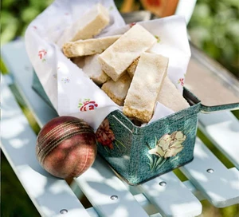

Shortbread

Description
A simple buttery shortbread recipe
Ingredients
- 300g butter, softened
- 140g caster sugar
- 300g plain flour
- 140g rice flour
Steps
- Place the butter and 140g sugar in a food processor and whizz until smooth
- Tip in both the flours and a pinch of salt, then whizz until mixture comes together
- Using your hands, roughly spread the mixture out in a 20 x 30 x 4cm baking tray. Cover with cling film and smooth over until there are no wrinkles. Place in the fridge, uncooked, for at least 30 mins and up to 2 days.
- Heat oven to 180C/160C fan/gas 4. Remove cling film, then lightly mark the shortbread all over with a fork.
- Sprinkle with the remaining sugar, then bake for 20-25 mins.
- Leave to cool in the tin, then cut into 24 thin slices. Shortbread will keep in an airtight container for up to 1 week.